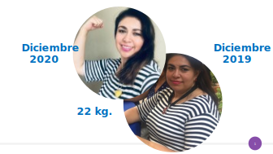

Biografía
Nombre: Myriam Ivonne Martínez Soto
Nombre del negocio: Psicología para la mujer
Profesión: Psicóloga clínica
Años en este negocio: 22 años
Trabajos anteriores: Directora de ventas (CAD)
Información Familiar
Esposo: David Chávez
Hijos: Rafa, Vale y Kary
Mascota: Lula
Pasatiempos :
Me gusta ir al cine aunque sea en casa... leo, me gusta mucho bailar, cocino, me involucro en alguna labor social o religiosa. Disfruto mucho estar con mi familia.
Metas:
Trascender en la vida a través de transformar vidas.
Algo que nadie de BNI, sepa de ti:
Soy fan de las ventas multinivel – soy una vendedora nata
Una de las experiencias más enriquecedoras en tu vida:
Escribir mi autobiografía y ganar un concurso a nivel nacional.
Ser una mujer resiliente y por mi experiencia personal saber comprender.
La clave de tu éxito:
El poder de la oración.
HABILIDADES
- Experiencia en el área de Psicología Clínica con formación en Teología lo cual me ha permitido a lo largo de más de 20 años hacer conexión con mis pacientes y comprender el origen de las situaciones que aún no resuelven, derivado de las emociones, sentimientos o pensamientos reprimidos.
- Trabajar mujeres que se sienten vulnerables provocado por divorcios, violencia, perdidas, sobre peso, abandonos, cambios drásticos en sus vidas, etc. me ha creado una habilidad de empatía y que me brindada experiencia para seguir ayudando a quien necesite mi servicio.
- Ayudo a implementar nuevos proyectos a emprendedores desde el principio de la psicología, llevándolos a la realidad de su mente, descubriendo la capacidad de crear y dar el primer paso. (Tengo como experiencia ser fundadora de un Centro de Bienestar Emocional).
OBJETIVO
Ayudar y brindar herramientas a mis pacientes que les permita descubrir el origen de su situación, respetando su dignidad, su integridad y la forma de integrarse a la sociedad ante el cambio.
REDES
- CLIENTES: Recursos humanos, profesionistas, escuelas.
- AMIGOS: Los que están en mis redes sociales
- FAMILIARES: Abogados, contadores, ingenieros, etc.
- CONOCIDOS: Instituciones de ayuda, iglesias.
LOGROS
- Ayudar con de mi programa “Aprende a vender a través de la FE”.
- Colaborar de manera voluntaria en 2 instituciones de gran ayuda, apoyando en el área de procuración de fondos y presenciar la realización de proyectos que aportan a la sociedad mexicana.
- Lograr recuperar mi peso a través de mi propia metodología y beneficiar a más de 430 mujeres a lograr este objetivo.
ESFERA DE CONTACTOS
- Escuelas
- Instituciones de ayuda
- Iglesias
- Psicólogos
- Psiquiatras
- Doctores
- Abogados
- Recursos Humanos
REFERENCIAS
Busco personas que estén viviendo una situación emocional que no han podido superar.
Ejemplo:
- Tristeza
- Miedo
- Ansiedad
- Enojo
Sentimientos o pensamientos que son persistentes.
Sientes que la obesidad o sobre peso es causa de las emociones, sentimientos, pensamientos, costumbres o factores que no puedes controlar.
Todas las personas que estén o deseen transformar su vida profesional o personal.
Ejemplo
- Divorcios
- Perdida del trabajo
- Decisiones importantes como para cambiar de puesto, casarte, etc.
- Construir una nueva familia después del divorcio
- Emprender un negocio
TALLER DE OBESIDAD EMOCIONAL
Todos los meses se abren 3 grupos, actualmente han logrado recuperar su peso más de 460 mujeres.
El taller está diseñado con mi metodología enfocado a controlar emociones y lograr que a través de los pensamientos identifiquemos la mentalidad de gordo que nos provoca el descontrol del peso.

Logrando un adelgazamiento definitivo
- Taller de 10 sesiones.
- 1 sesión por semana.
- Tareas y seguimiento.
- Cupo limitado a 10 mujeres por grupo.
Aprende a vender a través de la FE
Programa enfocado a los grupos de ventas que necesite un cambio importante que permita reconocer que los vendedores necesitan tener FE de tal forma que los clientes ya están esperando el servicio que ellos tienen.
Este programa ha apoyado a grupos de linderes multinivel y promotorías teniendo resultados muy importantes en el incremento de sus ventas.
EQUIPOS DE PODER
Somos 3 profesionistas del capítulo de BNI Cuicuilco que Brindamos estrategias para la prevención de los riesgos psicosociales en las empresas para dar cumplimiento a la NOM-035-STPS-2018.
La experiencia de Sergio Mendoza director de SolDH expertos en recursos humanos – Omar Garza director de la empresa TRIC empresa enfocada a la comunicación y una servidora enfocada a la capacitación en temas de liderazgo nos complementamos para brindar un servicio excelente a las empresas que deseen incrementar su productividad y dar cumplimiento con la norma.
Trabajamos con mujeres independientes y por cumplir nuevos retos al querer iniciar un emprendimiento.
Somos 4 profesionista que unimos nuestra experiencia en las áreas de psicología, marketing, contabilidad y legal para apoyar de manera integral a quien necesita un enfoque en su nuevo negocio.
A través de talleres, capacitación y asesoría personalizada. Proyecto Fortaleza te acompaña en el crecimiento de tu negocio.
NOTA SOBRE MIS CLIENTES Y REFERENCIAS
¿Cómo llegaron a mi negocio?
Son recomendados de gente que me conoce o de pacientes que ya estuvieron en terapia conmigo, también a través de conferencias que doy y gracias a mi capítulo de BNI Cuiciculco.
¿Qué hice por ellas?
Los ayude al proceso emocional, mental y físico para reconocer y aprender las capacidades que tenemos de ser resilientes ante las situaciones que se presenten en la vida personal o laboral.
¿Cliente ideal?
Mujeres entre 14 años y 99 años
¿Cuál es una mala referencia?
¡No hay malas referencias!
Sin embargo, los caballeros, niños o adicciones especiales, no atiendo sin embargo puedo ayudar a canalizarlos
¿Otras fuentes de referencia?
- Quien trabaje con mujeres y no sepan qué hacer con las emociones de sus clientas como abogados, maestros, doctores, R.H. ventas.
¡GRACIAS, GRACIAS, GRACIAS!
Me despido con una frase de la autora Louise L. Hay. ¡Deseo que la apliques en todo momento!
MIRO DENTRO DE MI… PARA ENCONTRAR MIS TESOROS